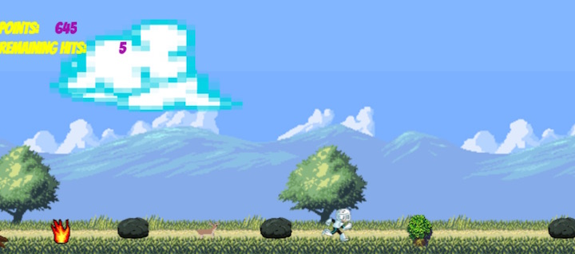

Hiker Man Game
Screen Shot

About Hiker Man
HikingMan is an online game made with Phaser and Meteor. It was built for the final project during General Assemblies Web Development Immersive Program. Go play it at hikerman.meteor.com. It may take a moment to load, but see if you can find the Pink Unicorn!
Phaser.io is a fast, free and fun HTML5 game framework. It uses a custom build of Pixi.js for WebGL and Canvas rendering across desktop and mobile web browsers. There are tons of tutorials and examples that make creating a game very easy.
If you want to make a game with Phaser, go to their repo, Phaser Repo, clone it and download the phaser.js and phaser.min.js so you can get started!
Meteor is a very simple way to create a real time, full Javascript Apps. Go check them out! I used it to give players an option to add their top scores and initials to the database.